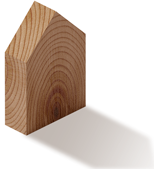
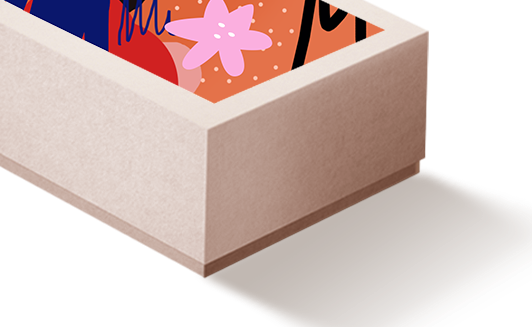
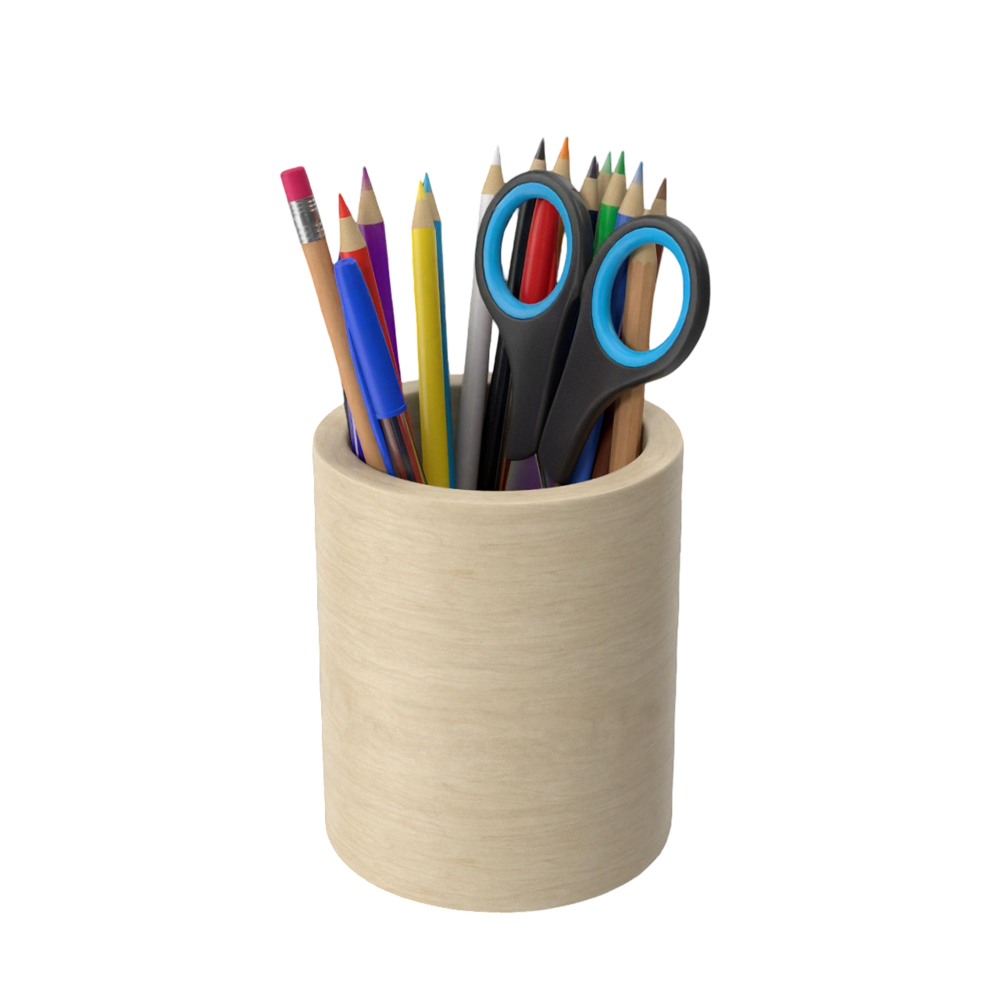
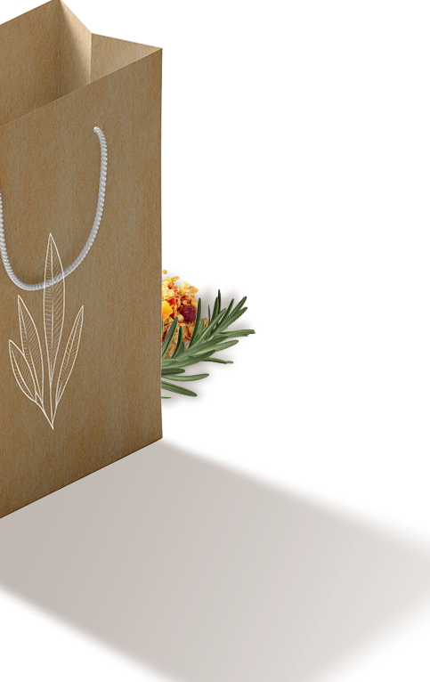
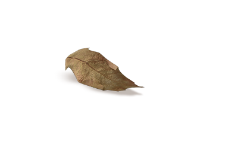
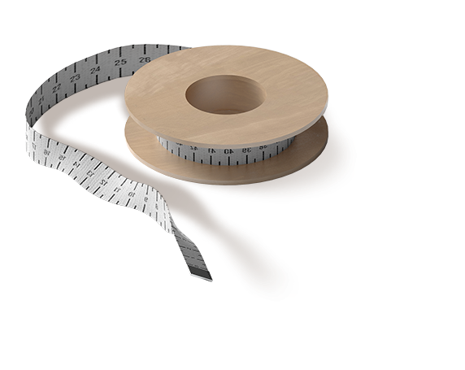
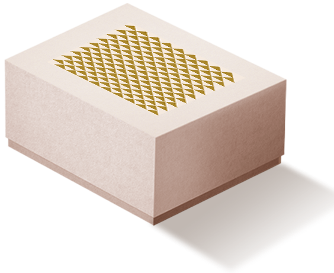
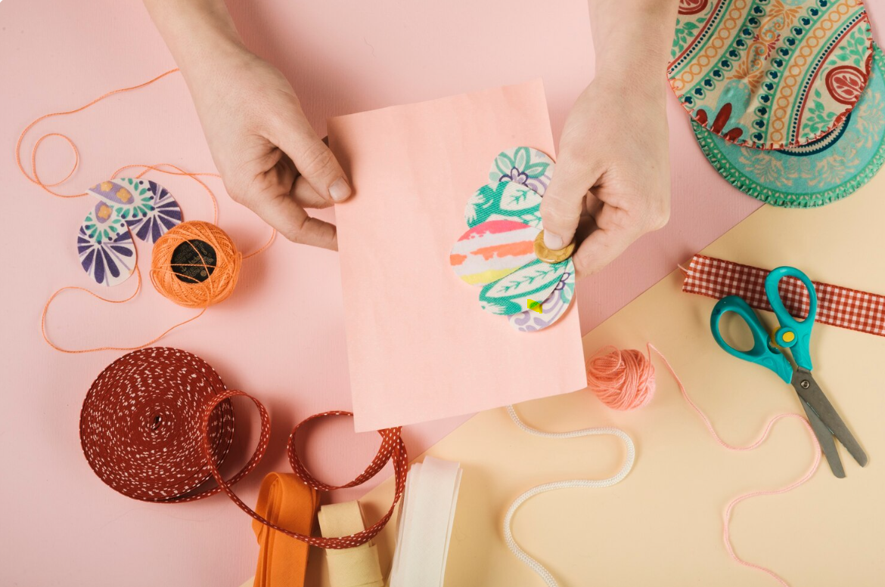

Welcome to My Creativity, a theme that lets you create anything you can imagine with ease! Everything your new website needs is here.

Welcome to Crafting With My Creativity – your home for handmade, heart-made creations! We are a passionate team of artists and makers dedicated to bringing warmth and personality to every piece we create. Whether it’s hand-knitted scarves, custom woodwork, or intricate paper art, each item is made with care, creativity, and a commitment to quality. We provide three types of crafting paper , Clay and Wooden Crafts for you.
Thanks for visiting
© 2025 All right reserved.